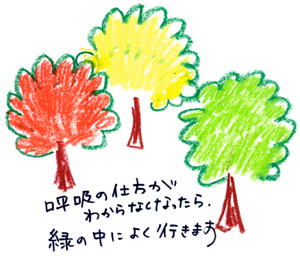

| 部屋のドアを開けて、入ってきたのは同僚の優ちゃんだった。
「ともみー。あそこのショートケーキ、買ってきちゃったよ」
優ちゃんはピンクのシャツに、紺色のパンツスーツを履いている。いかにも会社帰りのＯＬだった。つい最近私だって同じ格好をしていた。私はうつむいて、パジャマの裾をつかむ。優ちゃんは私の無言の態度も、一向に気にならないみたいだ。ううん、本当は気をつかっているのかもしれない。私のことを心配しているのかもしれない。
「ここ、座っていいかな」
優しく微笑む彼女に、私は窓の方を見ながらうなづいた。
いや、本当は私のことバカにしてるのかもしれない。こんな病気になっている私のことを見下しているのかもしれない。だいたい、ただ同じ会社にいただけの仲間を、心配だからという理由だけでこうして家までやって来られるわけないじゃない。
「調子はどうなの？」
眉を寄せて、心配そうな表情をする優ちゃん。
「それより会社はどうなの？ 誰がチーフをやってるの？」
今日初めて彼女の顔をまっすぐに見返した。優ちゃんはどう答えようか、困った顔をしている。
私が会社を休職して１か月が経った。ヨシくんに病気のことがバレてしまったあの日、私は家に帰ってお母さんに全てを話した。動悸が頻繁にしてしまうこと、人に触れられるのが嫌なこと、同僚や外の世界を汚いと思ってしまうこと……さすがにお母さんを汚いと思ってしまうことは言えなかったけど、その他の全てを話した。お母さんは私が言うことにいちいちうなづいていた。涙ひとつ見せず、動揺した顔もせず。そして優しい笑顔で「会社を当分休みなさい。生活はお母さんが何とかするから」とだけ言った。本当は仕事を休みたくなかった。同期で一番の出世をした時に誰が休みたいなんて思うもんか。でも心のどこかでは、もう仕事なんてどうでもいいような気もしていた。この状態から抜け出せるのであれば、何だって捨てられるような気もした。
「朋美はさ、今は仕事のことより治療に専念した方がいいんじゃないかな」
長い沈黙の後、優ちゃんは遠慮がちに言った。
「もう会社のことを気にするのやめなよ」
休職してから週に１度は訪ねてくる優ちゃんに、私は会社のことばかり聞いてきた。あの商品の販売はどうなったか。部長は何て言ってるのか。休職の手続きはお母さんがやったから、会社が私をどう思っているのか、私が進めてきた仕事はどんな風に処理されたのか、私には知りたいことだらけだった。でも優ちゃんはいつもあいまいな返事しかしない。そして今日初めて、はっきりと切り捨てられたような言葉を投げかけられた。
悔しくて、唇をかんだまま優ちゃんを見つめた。優ちゃんの寂しそうな顔。どうせ演技なんでしょ。むしゃくしゃして、側にあったクッションを壁に投げつけた。
「もう、出てって」
しぼり出すような声で言う。
「また、来週来るね」
優ちゃんがいつもと変わらない明るい声で言った。それが余計にイライラした。
「もう、来ないで」
うつむいて、膝をかかえる。
優ちゃんがすっと立ち上がった。私の声が聞こえなかったように、「ケーキ、食べてね」とだけ言う。ドアを開ける前に優ちゃんが立ち止まった。
「ヨシくんが心配しているよ」
頭上にその声が響く。私は何も言わない。そしてドアが閉まった。私はすぐに常備してあるウェットティッシュで丁寧にドアノブをふく。そして自分の服を軽くはたき、ベットの上にあがった。
ベットの上。ここだけが私の聖域。誰にも触れられていない、汚れていない場所。
ヨシくんとはあの夜以来、会っていない。私が手を洗っているところを見た時の、彼の青ざめた顔が忘れられなかった。彼も同じ気持ちなんだと思う。二回ほど携帯に電話がきただけで、家までは訪ねてこない。
私たちはずっと支えあってきたと思っていた。彼のご両親にも会ったことがあるし、二人の前には「結婚」という文字が、すぐ届きそうな距離で見えていた。ヨシくんが仕事で大きなミスをして落ち込んだ時、一緒に仕事をさぼったことがあった。離婚したお父さんに会いたくて泣く私を、ヨシくんのお母さんが抱きしめてくれたことがあった。私のお母さんに初めて挨拶した時の、ヨシくんの照れくさそうな顔。二人で何十回も通ったレストラン。１年という短い間でも、私はヨシくんと本気で付き合ってきたし、それまでの恋人には見せなかった自分も、ヨシくんにはぶつけてきた。
でも本当はまだ１度も支えあったことはなかったんじゃないかと思う。
気づいたらベットの上で泣いていた。恋人も、仕事も、友達も、どうしたら前みたいに戻れるのかわからなかった。病院では血液検査をして、薬を飲んだ時の体の状態を聞かれて、また薬を追加されて、おしまい。
「洗うのが止められないんです」
と、富岡医師に訴えたこともあった。
「病気ですからね。そう簡単にはいきませんけど、薬を飲んでできるだけ我慢してください」
それはわかったけど、それができないからここに来てるんじゃないか。でももう何も言えなかった。病院では心は治せない。それが私の結論。じゃあどうしたらいい？
ふと、病院のトイレで会った人のことを思い出した。江崎さんとかいったけ。辛くなったらメールちょうだいって言ってた人。あれ以来、あの人と病院で会うことはなかった。彼女も同じ病気なんだろうか。
メールアドレスを受けとった時は連絡なんか絶対するもんかって思っていたのに、今は話したくてたまらなかった。カバンの中から紙切れを探す。すぐに見つかって、メールを打った。
『私、森下病院のトイレで会った山下朋美って言います。覚えてますか？ 江崎さんからメールアドレスをもらったのを思い出してメールを打っています。今、とても辛い状況です。江崎さんはどうですか？』
返事はすぐに返ってきた。
『覚えています。山下さんっていうんですね。メールありがとう。嬉しかったです。病気の時に辛くない時なんてないですよね。良かったら、私たちの会に来ませんか？ 強迫性障害やうつ病や、いろんな人がいるんですけど、月に２回集まって、みんなでご飯を食べてるんです』
強迫性障害の名前が出てきたことにドキッとした。やっぱり彼女も同じ病気なんだろうか。そこに行ったら、何かここから抜け出せるヒントが見つかるかもしれない。私はまたすぐに彼女へメールを打って、次の会に参加することにした。
１週間後。19時に世田谷のレストランに集合というので、私は出かける準備をした。
「あら、朋美、出かけるの？」
仕事から帰ったお母さんが驚いたように言う。ここ１か月半、私は病院以外は家に閉じこもりきりだった。
「うん、ちょっと友達とご飯食べに」
「そう、楽しんできてね」
お母さんが嬉しそうに言う。でも顔に残った疲れは消えていないように見えて、私は思わず目をそらせた。私が働かなくなってから、夕食は目に見えて粗末になってきた。そんな光景が見たくなくて、数週間前からお母さんと夕食を別々にとっている。
「行ってらっしゃい〜」お母さんの声に押されて家を出た。
夕暮れ時を歩くのは久しぶりで、何だか冷たい風も気持ち良い。
駅から降りると、目的のレストランはすぐにわかって、私は少し緊張しながら中に入った。ほとんどがカップルや数人の会社員で、それらしいグループは奥にいる人たちだ。中に進むと、１度会ったきりの江崎さんの顔が見えた。彼女が私に気づいて手をふる。江崎さんを囲むように、座敷に10人ぐらいのグループが座っていた。
「今話していた山下朋美さん」
江崎さんが私を紹介してくれて、私は軽く頭を下げる。一見普通に見える人たちばかりだ。年代も20代から30代後半ぐらいまでの人ばかりで、はたから見たら合コンかサークルのようにしか見られないと思う。私はほっとしながら、少しずつみんなと話をした。でも会話の内容はどこの病院はダメだとか、あの薬を飲みはじめた、これって副作用なのかなぁとか、やっぱり治療の話が中心だった。私はもっと普通のことが話したいのに。どうしたら仕事に復帰できるのかとか、友達と普通に付き合えるのかとか。そして店員さんが料理を運びに来るたびに会話の内容を聞かれないか心配になってきた。
少しずつ慣れてきた頃、思いきって隣にいる男性に話しかけた。
「私はＯＬで休職中なんだけど、あなたは何か仕事してるの？」
ちょっと失礼な聞き方だったかなと思ったけど、構わずに続けた。
「仕事復帰の相談とかしたいんだけど、みんな働いていなそうだから……」
最後の方は小声で、周りに聞こえないように言った。隣にいる男性はスーツ姿ではないけれど、他の人とは雰囲気が違って、働いている人特有の厳しさがあった。
「よく僕が働いているってわかりましたね。僕は、医者ですよ。歯科医だけど」
お医者さんなんだ。私は少し驚いて、そして嬉しくなった。歯科医のような仕事でも続けていくことができるんだ。戸田さんと名乗るその男性は、優しく私の話を聞いてくれた。大手の会社に勤めていたこと、チーフになれた途端、休職してしまったこと。
「よくわかる。僕もそういう時期あったしね。前に座っているあいつも、」
ブルーのＴシャツを来て、額に汗をかいている男性を指して言う。
「ああ見えても税理士で、自分で会社を立ち上げたやつなんだよ。その直後に病気になったらしくてね」
私はうなづく。もっと知りたい。どうしたら仕事に復帰できるのか。どうやって病気を抑えることができるのか。私が質問しようとして口を開いた途端、遮るように戸田さんが言った。
「ちょっと失礼」
バックごと慌ただしく、トイレの方に向かって戸田さんが去っていく。私は呆気にとられていた。戸田さんがいなくなって周りを見渡すと、他にも何人かいないことに気づいた。トイレとは違う慌ただしさで席を去っていく人たち。
あっと思った。私、質問しようとして戸田さんに体を向けて、ちょっと肩が触れた気がする。もしかしたらそれが原因？ 体が冷たくなっていくのを感じた。安定剤が入っている鞄をぎゅっと握りしめる。
しばらしくして戸田さんが戻ってきた。トイレよりずっと長い数十分、彼は何をしていたの？ 疑問に思うまでもない。戸田さんの長袖の袖口は濡れていた。上着のおなかのあたりも水しぶきがかかっている。ちょうど洗い物をしていた人のように。周りを見ると、薬をさっと鞄にしまう人がいる、江崎さんも笑いながら何度もおてふきで手を拭いている……なんだ、みんな本当は笑ってないんじゃない。
悲しくなって目をそらせると、店員さんと目が合ってしまった。店員さんがさっと目をそらせる。合コンかサークルに見えると最初に思ったけど、今は違う。きっと異様な集団なんだ。私が感じる違和感をきっと店員さんも感じている。そこの中にいる自分。私も異様な一人。私は店員さんの世界には戻れない、かと言ってこの人たちと係わるのも嫌だ。この人たちの仲間になりたくない。
私は適当な言い訳を言って、店を出た。外は真っ暗だった。自分にも他人にも病気にも、何もかもに腹が立って石を蹴った。電柱に思いきり体当たりした。じーんと響く右腕が妙に心地良く思う。こんな体なくなっちゃえばいい。もう涙さえ出てこなかった。
私の病状は悪化する一方だった。
週に１度病院に行く以外は家に閉じこもる毎日。１日中ベットの上で、窓の外が暗くなっていくのを眺めていた。優ちゃんが訪ねてきたり、お母さんが部屋に入ってきた時はウェットティッシュを何枚もつかってドアをぴかぴかに磨く。
会社を辞めて２か月経った時、急にお母さんの部屋が汚く思えた。リビングの隣にある和室のお母さんの部屋。あそこには汚い菌がたくさんいる。急にそんな思いが浮かびあがってきて、お母さんにそこに入らないようにお願いする。お母さんは私の隣の北向きの部屋に寝てもらうことにした。
それでも私の強迫はおさまらない。寝る前にガスが消えてるか、ドアが閉まってるか、台所のマットが歪んでいないか。何度も何度も確認した。寝る前にそれを３０回以上確認しないと、自分が汚れていくような観念にとらわれてしまう。そんなことをしている自分が怖かったけど、確認せずにはいられなかった。自分だけでは信用できなくて、お母さんにも確認してもらう。
「お母さん、ドアとガス確認した？」
お母さんはおびえたようにうなづく。
「お母さん、あの部屋行ってないよね？」
リビングの隣の、お母さんの部屋だった場所に入っていないか、私は１日に何度も確認した。お母さんは青ざめた顔でうなづく。お母さんはうなづく以外に、私と会話をすることもなくて、家の中はひっそりとしていった。
ある日、急にお茶が飲みたくなった。いつもはお母さんが部屋の前にたくさんの食べ物や飲み物を置いといてくれるのに、その日は飲み物がない。少し腹を立てながら私は１階のリビングへ入った。
その時、リビングの隣の、私が進入禁止にしていた部屋からお母さんが出てきた。
「なんで、入ってるの」
自分の声とは思えない、低い声が出た。
汚い。あの部屋の菌がリビングにばらまかれた。リビングが汚れてしまった。
その瞬間、頭が真っ白になって、リビングのテーブルの上にあった皿を、窓に向かって投げつけた。ものすごい音で窓ガラスが割れる。それでも私の気持ちはおさまらなかった。テーブルの上にある夕食の残りや、しょうゆ入れを全部投げつける。
リビングが汚れてしまった。取り返しがつかない。汚い、汚い。
「もうやめてっ」
お母さんが悲鳴に近い声で私を抱きしめる。離して、離してよっ。
「何がいけないのよ、どうしてなのっ」
ガラスが飛び散った床にひざまづいて、お母さんが泣いた。化粧もしていない、あれだけ綺麗だったお母さんが、真っ青な顔で泣いているのを見た時、ようやく我に返った気がした。
もうめちゃめちゃだ。私は何も言わずに、２階へあがって自分の部屋に戻った。窓から真っ赤な夕暮れが見える。自分の部屋の窓を久々に開けると、５月なのに肌寒い風が吹きこんできた。寒さに縮こまりながら、私は下を見下ろす。
この高さじゃ、無理だよね。
そんなことを思う自分がいる。久々に姿見に映った自分の顔をまじまじと見る。化粧を全くしてない、クマができた顔。私、こんなぶさいくだっけ。そんな顔を見たら、本当に全てをお終いにしたくなってしまった。
それから数日、私は自分の部屋から１歩も出なかった。ガスやドアの戸締りも確認したかったけど、お母さんと顔を合わせたくないし、汚れてしまったリビングへ入るのが嫌だったから我慢した。私の部屋だけ守っていけばいいんだと自分に言い聞かせる。
今日は日曜日。業者らしい人が下に出入りして、ガラスを入れ換えてるようだった。
その時、突然階段を駆け上がってくる音がして、いきなり、ドアが開いた。ベットの上にパジャマ姿でいた私は驚きのあまり声がでない。病気になってから、ううん、なる前もいきなり私の部屋のドアを開ける人なんていなかった。みんなちゃんとノックをして、私が返事をしてから入ってきた。
なのにいきなりドアを開けて入ってきたのは、優ちゃんだった。優ちゃんははぁはぁ息を弾ませている。
「朋美、聞いてよ〜。もう、見て！」
優ちゃんはいきなり私のベットにどすんと座った。そこが聖域だっていうことは、もう頭からすっとんでいた。いきなり、私の部屋のドアを開けて、何の許可もなくベットに優ちゃんが座ったことにただただ唖然としてしまった。そもそも優ちゃんが来たのは２週間ぶりなんだ。メールはきたような気がするけど、返事を出してないから、優ちゃんの存在が本当に久々に思えた。
優ちゃんはがざこそとバックから携帯を取り出し、携帯で撮った写真を表示させた。
「ちょっと、これ、見て」
ぷうんと頬を膨らませて、優ちゃんが私に携帯を見せる。でも画像が荒くてよくわからない。私がけげんな顔をしていると、優ちゃんがじれったそうに言う。
「うんち」
「はっ？」
私が驚いて聞き返すと、優ちゃんが顔を真っ赤にして言う。
「今日、天気がいいからね、ちょっと遠いけど朋美の家に自転車で行こうとしたの。そしたらね、私の自転車のハンドルに人間のうんちがのってたわけっ！ 信じられないでしょっ。あんまり頭にきたから、通りすがりの近所のおばさんに話したんだけどさ、なんか恨まれてるんじゃないの〜なんて言うわけ。たとえ恨まれてても、人の自転車にうんちする人なんて私の知り合いにはいないっつーの。しかも、これ、３０センチはあると思わない？」
再び携帯画面を見せて、優ちゃんが私に向かって言う。
その瞬間、こらえきれなくなって、私は吹き出してしまった。お腹をかかえて笑う。確かに、そう説明されるとその画面には“うんちらしきもの”がうつっている。優ちゃんの怒った顔と見比べて、私は大声で笑った。どうしてだか汚いという気持ちはわいてこなかった。優ちゃんは私が笑ったのが面白くないらしく、むっとした顔をしている。
「それで、どうしたの、そのあと」
さんざん笑った後、目尻にあふれ出た涙をぬぐいながら私は聞いた。
「ビニールでつかんで捨てたよっ。もう自転車を買い換えるお金ないから、ハンドルのカバーだけ買えるつもり」
いつもは美人なＯＬの優ちゃんが、鼻の穴を膨らませていて、何だか漫才師みたいに見えた。そんな自分の発想にまた笑って、ひとしきり笑った後、「じゃあ、自転車のハンドルの冥福を祈って」優ちゃんとビールで乾杯した。
安定剤とビールは併用してはいけないから、この２か月アルコールは控えていた。でも今日はＯＫ。きっと薬を飲まなくても平気。あっさりとそう思えた。乾いた喉にビールが気持ちよく浸透していく。
笑うってなんて気持ちいいんだろう。体が軽くなるんだろう。
汚さにおびえて固まっていた体が、少しずつゆるんでいくのを感じた。大丈夫、きっとまた笑える。窓を開けて風を入れたら、ようやく暖かくなってきたように感じた。（つづく）

|